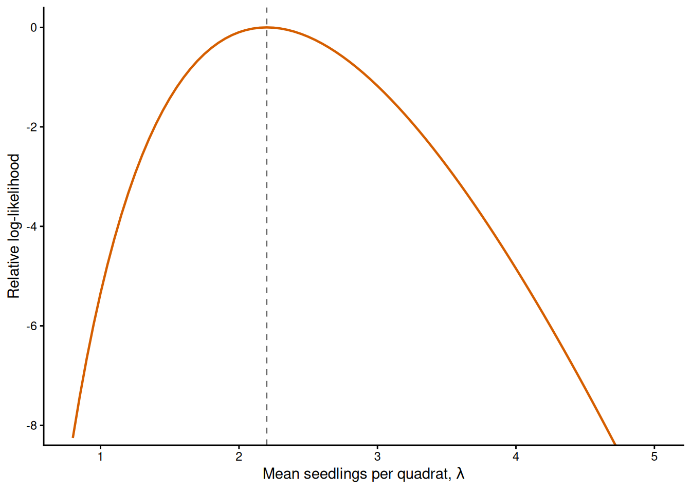
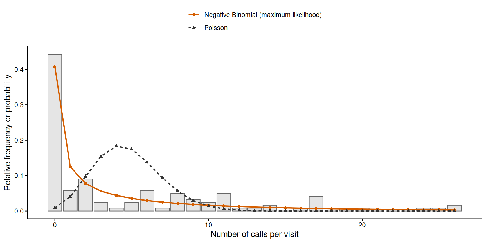
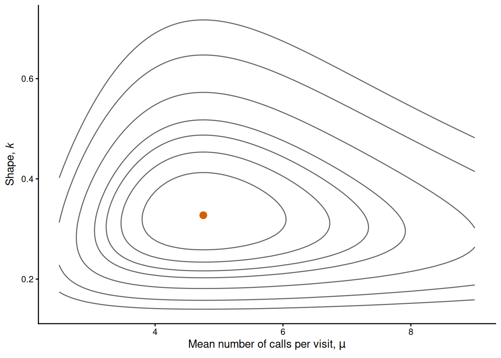
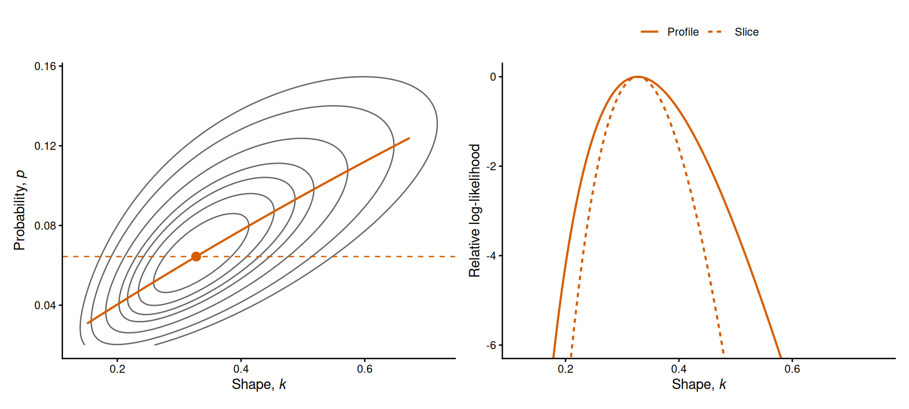
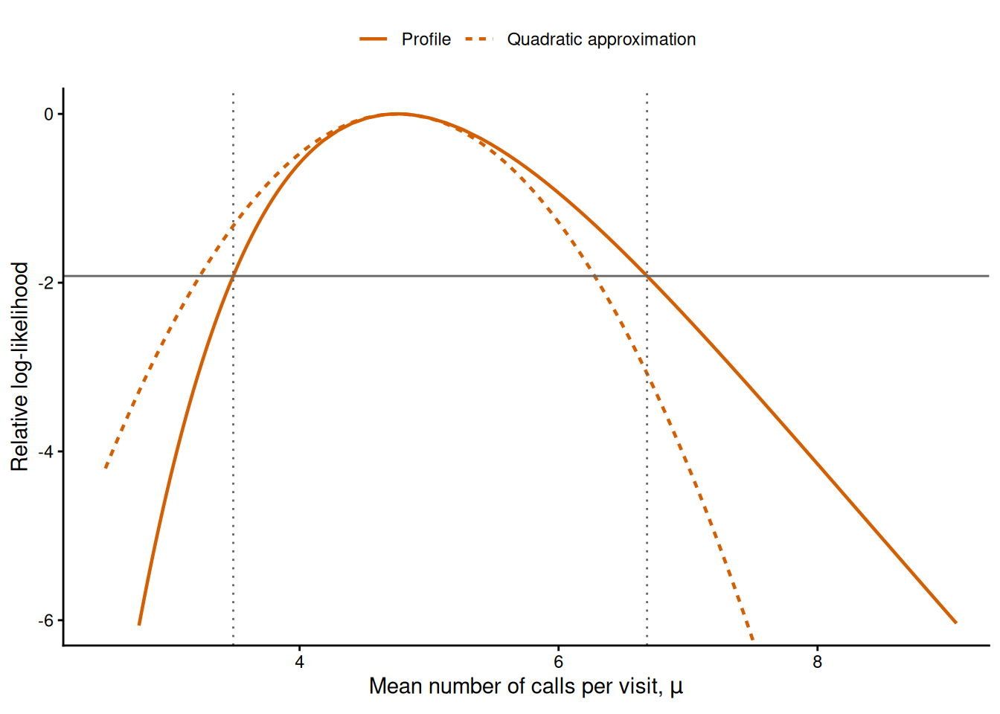
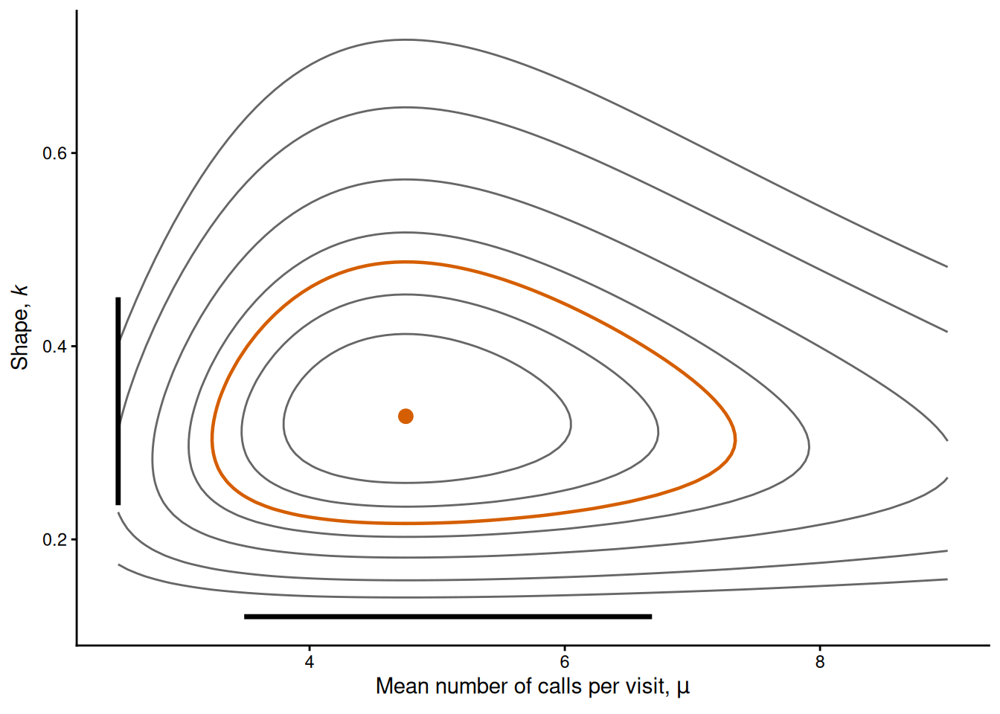
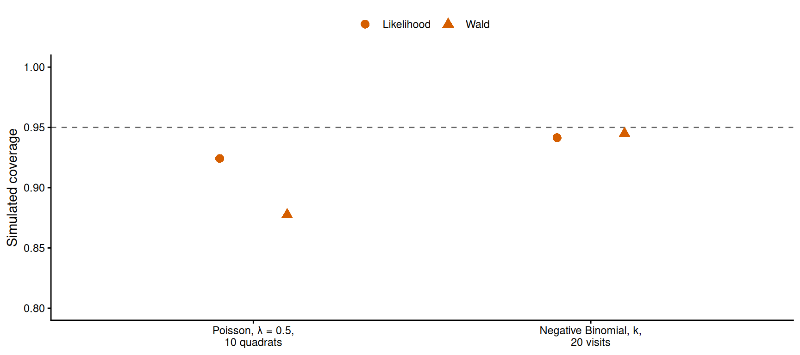
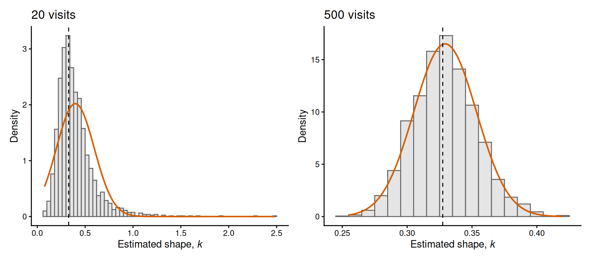

# Load RTMB first and RTMBdist second.
library(RTMB)
library(RTMBdist)
# Counts of balsam fir seedlings in 50 quadrats (see ?boot::fir), as in Chapter 3,
# and the number of quadrats.
data(fir, package = "boot")
seedling_counts = fir$count
n_quadrats = length(seedling_counts)Maximum likelihood estimation
1 Introduction
In this chapter, we learn how to estimate the parameters of a model and their uncertainty by maximum likelihood. In Chapter 3 we estimated parameters with the method of moments, which only uses the mean and the variance of a sample. Maximum likelihood uses the probability that the model assigns to every observation, and it applies to any model for which we can write a probability mass or density function. This is why it is the method of estimation in the rest of the course. The concepts of Chapter 3 (estimator, sampling distribution, standard error and confidence interval) remain the same; we now apply them to a different estimator.
The chapter has two parts. The first builds the method: the likelihood function, maximum likelihood estimation with optim() and the package RTMB, and models with several parameters. The second is about what we can say once a model is fitted: the uncertainty of the estimates, the properties of maximum likelihood estimators and the comparison of models with information criteria. Two examples run through the chapter. The first is the counts of balsam fir seedlings in 50 quadrats of Chapter 3, under a Poisson model, of which we also use the first ten quadrats where the shape of the likelihood matters. The second is the number of calls made by barn owl nestlings, the field data of the Chapter 3 practical, under a Negative Binomial model with two parameters.
2 Learning goals
In this chapter, we will cover:
- the likelihood function and the log-likelihood;
- maximum likelihood estimation by numerical optimisation;
- constraints on parameters and transformations;
- likelihood surfaces, slices and profiles for models with several parameters;
- standard errors from the curvature of the log-likelihood, and Wald intervals;
- likelihood profile intervals and joint confidence regions;
- the properties of maximum likelihood estimators in large and small samples;
- the comparison of models with the Akaike information criterion.
We will use the Poisson and Negative Binomial distributions throughout the chapter. They are described in the Supplement. We write and fit the models with the packages RTMB and RTMBdist, whose distribution functions we have used since Chapter 2.
The table below is a roadmap of the chapter. Each row is one step, with the question that it answers, the R tools that we use for it and the example on which we show it.
| Step | Question it answers | In R | Example |
|---|---|---|---|
| Part 1 | |||
| The likelihood | How probable are the data for a given value of the parameter? | dpois(..., log = TRUE), sum() |
Fir seedlings |
| Estimation | Which value of the parameter makes the data most probable? | NLL with getAll(), cmb(), MakeADFun(), optim() |
Fir seedlings |
| Transformations | How do we keep a parameter within its range? | exp(), plogis() |
Fir seedlings |
| Several parameters | What does the likelihood look like, and what does it say about one parameter? | dnbinom2(), for loops with obj$fn(), contour() |
Owls |
| Part 2 | |||
| Standard errors | How precise is the estimate? | sdreport() and ADREPORT() |
Fir seedlings and owls |
| Confidence intervals | Which parameter values do the data support? | Wald interval on the fitted scale; profile with TMB::tmbprofile() and confint() |
Fir seedlings and owls |
| Properties | Why does the method work, and when does it fail? | Simulation with obj$simulate() |
Owls |
| Model comparison | Which of two models is better supported by the data? | AIC | Owls |
3 The likelihood function
The likelihood function is the joint probability of the observed sample, read as a function of the parameters of the model with the data held fixed. For continuous data it is the joint density of the sample. Let \(x_1,\ldots,x_n\) be the observations and assume that they are i.i.d. with a distribution that has a parameter \(\theta\) (as in Chapter 3, \(\theta\) stands for a parameter in general). The likelihood of \(\theta\) is
\[ L(\theta\mid x_1,\ldots,x_n) = P(X_1=x_1,\ldots,X_n=x_n\mid\theta) = \prod_{i=1}^{n}P(X_i=x_i\mid\theta), \]
where \(P(X_i=x_i\mid\theta)\) is the probability mass that the model assigns to the observation \(x_i\) when the parameter is \(\theta\),1 and the symbol \(\prod\) denotes a product over the \(n\) observations, in the same way as \(\sum\) denotes a sum. The second equality holds because the observations are independent, so their joint probability is the product of their individual probabilities (see Chapter 2, where we announced that the i.i.d. assumption would be fundamental for estimation). For continuous data we replace each probability mass by the density \(f_X(x_i\mid\theta)\).
This is the formula of a joint distribution from Chapter 2. What changes is what we hold fixed. In Chapter 2 we fixed the parameters and calculated the probability of different possible samples. Now the sample has been observed, so \(x_1,\ldots,x_n\) are fixed numbers, and we look at how the probability of that sample changes as we vary \(\theta\). A parameter value under which the observed sample is more probable is better supported by the data; that is the crucial idea behind likelihood.2 The likelihood is the basis of everything that follows in this book: the estimates, their confidence intervals and the comparison of models are all calculated from it.
Let’s illustrate it with the counts of balsam fir seedlings in 50 quadrats of Chapter 3, where \(X_i\) is the number of seedlings in quadrat \(i\) and \(X_i \sim \operatorname{Poisson}(\lambda)\). The probability mass function of the Poisson distribution is \(P(X_i=x_i\mid\lambda)=e^{-\lambda}\lambda^{x_i}/x_i!\). We start with a case that is small enough to do by hand, the counts of the first three quadrats (0, 1 and 2). Their likelihood is the product of three contributions (remember that \(0!=1\)):
\[ L(\lambda\mid 0,1,2) = \frac{e^{-\lambda}\lambda^{0}}{0!}\times \frac{e^{-\lambda}\lambda^{1}}{1!}\times \frac{e^{-\lambda}\lambda^{2}}{2!} = \frac{e^{-3\lambda}\lambda^{3}}{2}. \]
For \(\lambda=1\) this gives \(e^{-3}/2\approx 0.0249\) and for \(\lambda=2\) it gives \(e^{-6}\,2^{3}/2\approx 0.0099\).
To verify our maths with R, we first load the packages RTMB and RTMBdist and the counts of the 50 quadrats, as in Chapter 3:
dpois() returns the contribution of each of the three counts for a given value of \(\lambda\), and prod() multiplies them:
# The counts of the first three quadrats.
first_counts = seedling_counts[1:3]
first_counts[1] 0 1 2# Probability of each of the three counts at lambda = 1.
dpois(x = first_counts, lambda = 1)[1] 0.3678794 0.3678794 0.1839397# Likelihood of the three counts: prod() multiplies their probabilities.
prod(dpois(x = first_counts, lambda = 1))[1] 0.02489353prod(dpois(x = first_counts, lambda = 2))[1] 0.009915009The two products are the values that we calculated by hand. These three counts are about 2.5 times more probable under a mean of 1 than under a mean of 2 (their own mean is 1). The likelihood of the whole sample is calculated in the same way:
# Likelihood of all 50 counts at lambda = 1 and at lambda = 2.
prod(dpois(x = seedling_counts, lambda = 1))[1] 4.211184e-50prod(dpois(x = seedling_counts, lambda = 2))[1] 1.317922e-39With the 50 counts the order is reversed: the whole sample is about \(3\times10^{10}\) times more probable under a mean of 2 than under a mean of 1, so 50 quadrats discriminate between these two values far more strongly than three. Note how small both numbers are. Every observation multiplies the likelihood by a probability smaller than one, so its value depends on the number of observations and has no meaning by itself. What we use is the comparison between the likelihoods of different parameter values for the same data.
A likelihood is calculated from probabilities but it is not a probability distribution for the parameter, for two reasons:
We work with aleatoric probability (Chapter 2): probabilities describe how the data or estimates vary across hypothetical samples, while the parameter of the model is a fixed quantity.3 So in the model there is no variation or error about \(\lambda\) to which a probability could refer.
For a fixed \(\lambda\) the probabilities of all the possible samples add up to one, but nothing forces the likelihoods of all the possible values of \(\lambda\) to do so for a fixed sample. For the 50 counts, the area under the likelihood across all the possible values of \(\lambda\) is approximately \(8.7\times10^{-40}\), which is very far from one.
WarningA likelihood is not the probability of a parameter value
The likelihood \(L(\theta\mid x_1,\ldots,x_n)\) is the probability (or density) of the observed data for a given value of the parameter, read as a function of the parameter. It does not tell us how probable a parameter value is. We use it to compare parameter values: the data are better supported by the value with the higher likelihood.
3.1 The log-likelihood
With a larger sample the product of probabilities can become smaller than the smallest positive number that the computer can represent, and R then returns zero. For this reason, and because sums are easier to work with than products, we use the log-likelihood, the natural logarithm of the likelihood:
\[ \ell(\theta\mid x_1,\ldots,x_n) = \log\left(L(\theta\mid x_1,\ldots,x_n)\right) = \sum_{i=1}^{n}\log\left(P(X_i=x_i\mid\theta)\right). \]
The logarithm turns the product into a sum. It is an increasing function, so a parameter value with a higher likelihood also has a higher log-likelihood, and both functions have their maximum at the same value of \(\theta\). Once the data are fixed we will write \(L(\theta)\) and \(\ell(\theta)\) for short.
In R, all the d* functions have an argument log. With log = TRUE they return the logarithm of the probability mass (or density), which is more accurate than calculating the probability first and taking its logarithm afterwards. The log-likelihood is the sum of these values. To see where the product fails, we simulate 1,000 counts from a Poisson model with \(\lambda=4\):
# Likelihood and log-likelihood of a large simulated sample of 1,000 counts at lambda = 4.
set.seed(seed = 501)
many_counts = rpois(n = 1000, lambda = 4)
# The product is smaller than the smallest positive number R can represent.
prod(dpois(x = many_counts, lambda = 4))[1] 0# The sum of log probabilities is an ordinary number.
sum(dpois(x = many_counts, lambda = 4, log = TRUE))[1] -2094.569R returns zero for the product, although none of the probabilities in it is zero, whereas the log-likelihood is an ordinary number. From here on we always work with log-likelihoods.
For continuous data the contributions to the likelihood are densities. Recall from Chapter 2 that a density has units (one over the unit of the measurement), that it changes with those units and that it can be larger than one. The log-likelihood inherits these properties: it can be positive, and its value changes if we express the same measurements in other units. For example, if body masses are converted from grams to kilograms, the density of every mass is multiplied by 1,000 (the same probability is spread over a thousand times fewer units), so the log-likelihood of \(n\) masses increases by \(n\log(1000)\). This shift is a constant, so the differences between the log-likelihoods of two parameter values, or of two models, are the same in both units. In general, the value of a log-likelihood means nothing by itself, and only differences between log-likelihoods calculated from the same data are meaningful.
Practice 1: crab burrows
Three plots on a mudflat contain 3, 1 and 2 crab burrows. Assume that the counts are i.i.d. with a Poisson distribution. On paper, write the likelihood as a function of \(\lambda\) and calculate the likelihood and the log-likelihood for \(\lambda=2\) and for \(\lambda=3\) burrows per plot. Which of the two values is better supported by the data?
TipSolution
The likelihood is the product of the three contributions:
\[ L(\lambda\mid 3,1,2) = \frac{e^{-\lambda}\lambda^{3}}{3!}\times \frac{e^{-\lambda}\lambda^{1}}{1!}\times \frac{e^{-\lambda}\lambda^{2}}{2!} = \frac{e^{-3\lambda}\lambda^{6}}{12}. \]
For \(\lambda=2\) the likelihood is \(64e^{-6}/12\approx 0.0132\) and the log-likelihood is \(-6+\log(64/12)\approx -4.33\). For \(\lambda=3\) the likelihood is \(729e^{-9}/12\approx 0.0075\) and the log-likelihood is \(-9+\log(729/12)\approx -4.89\). The data are better supported by \(\lambda=2\), which is the mean of the three counts. The difference between the two log-likelihoods is 0.57, so the counts are about 1.8 times more probable (\(e^{0.57}\)) under \(\lambda=2\) than under \(\lambda=3\). In R:
# Log-likelihood of the three counts at lambda = 2 and at lambda = 3.
burrow_counts = c(3, 1, 2)
sum(dpois(x = burrow_counts, lambda = 2, log = TRUE))[1] -4.326024sum(dpois(x = burrow_counts, lambda = 3, log = TRUE))[1] -4.8932334 Maximum likelihood estimation
The maximum likelihood estimator (MLE) of a parameter is the value of the parameter for which the likelihood of the observed sample is highest:
\[ \hat\theta = \underset{\theta}{\arg\max}\;L(\theta\mid x_1,\ldots,x_n) = \underset{\theta}{\arg\max}\;\ell(\theta\mid x_1,\ldots,x_n), \]
where \(\arg\max\) reads “the value of \(\theta\) at which the function reaches its maximum”. That is, \(\max\) would give the height of the highest point and \(\arg\max\) gives its location. In plain English, the MLE is the parameter value under which the model assigns the highest probability to the data that we observed. As we saw in Chapter 3, the procedure of calculation is called estimator and the value that it returns for a given sample is the estimate; we use the abbreviation MLE for both.
At the highest point of the log-likelihood its slope is zero (if you need to refresh how a derivative is calculated, see the rules of differentiation of the calculus refresher). For i.i.d. Poisson counts, setting the derivative of the log-likelihood with respect to \(\lambda\) to zero and solving for \(\lambda\) gives
\[ \hat\lambda=\frac{1}{n}\sum_{i=1}^{n}x_i=\overline x. \]
So the MLE of \(\lambda\) is the mean of the sample, which is also the method-of-moments estimator of Chapter 3, and for the 50 counts it is 2.14 seedlings per quadrat:
# The maximum likelihood estimate of the Poisson mean is the mean of the counts.
lambda_hat = mean(seedling_counts)
lambda_hat[1] 2.14A solution that can be written as a formula, like this one, is called a closed-form solution, and it exists only for a few models.4 For the others, setting the derivatives to zero gives equations that cannot be solved with algebra, and we find the maximum numerically, with an algorithm that searches for it. That is the method that we use in the rest of the book, because it works for any model for which we can write a likelihood.
4.1 The likelihood curve
A likelihood curve is the log-likelihood of a model with one parameter, drawn as a function of that parameter. It shows where the maximum is and how quickly the log-likelihood falls on either side of it, which is what we will use in Section 6 to calculate confidence intervals. We plot it as a relative log-likelihood, which is the difference between the log-likelihood and its maximum,
\[ \ell(\theta)-\ell(\hat\theta), \]
so that the curve is zero at the estimate and negative everywhere else. We draw all the likelihood figures of this chapter on this scale, because only differences in log-likelihood are meaningful.
The shape of a likelihood curve is easier to see in a small sample, so from here on we use the first ten quadrats for the curve and for the uncertainty of \(\lambda\). They contain 22 seedlings, so their estimate is 2.2 seedlings per quadrat:
# The counts of the first ten quadrats and their maximum likelihood estimate.
ten_counts = seedling_counts[1:10]
lambda_hat_ten = mean(ten_counts)
lambda_hat_ten[1] 2.2To draw the curve, we define a grid of values of \(\lambda\) and fill a vector with the log-likelihood at each of them, using a for loop:
# Candidate values of lambda (seedlings per quadrat).
lambda_grid = seq(from = 0.8, to = 5, by = 0.05)
# Pre-allocate a vector for the log-likelihood and fill it with a loop over the grid.
loglik_grid = rep(NA, times = length(lambda_grid))
for (i in seq_along(lambda_grid)) {
loglik_grid[i] = sum(dpois(x = ten_counts, lambda = lambda_grid[i], log = TRUE))
}We then subtract the log-likelihood at the estimate from every value of the grid. We also calculate the relative log-likelihood at two values of \(\lambda\) that are one seedling away from the estimate, on either side of it:
# Relative log-likelihood: the difference from the log-likelihood at the estimate.
loglik_lambda_hat_ten = sum(dpois(x = ten_counts, lambda = lambda_hat_ten, log = TRUE))
relative_loglik = loglik_grid - loglik_lambda_hat_ten
# Relative log-likelihood at 1.2 and at 3.2 seedlings per quadrat.
sum(dpois(x = ten_counts, lambda = 1.2, log = TRUE)) - loglik_lambda_hat_ten[1] -3.334988sum(dpois(x = ten_counts, lambda = 3.2, log = TRUE)) - loglik_lambda_hat_ten[1] -1.756744The curve reaches its maximum at \(\hat\lambda=2.2\) seedlings per quadrat (Figure 1). Note that the curve is not symmetric: it falls more steeply to the left of the maximum than to the right. The relative log-likelihood is \(-3.33\) at \(\lambda=1.2\) and \(-1.76\) at \(\lambda=3.2\), so a mean of 3.2 is better supported by these data than a mean of 1.2, although both are one seedling away from the estimate. This asymmetry matters for confidence intervals (Section 6).

A grid of values shows us the curve. To find its highest point for any model, with any number of parameters, we use an optimiser.
4.2 Numerical optimisation
An optimiser is an algorithm that searches for the parameter values at which a function reaches its minimum. It starts from values that we provide, evaluates the function, and moves step by step towards lower values until it cannot improve any further. In R we use the function optim(). Since it minimises, we do not give it the log-likelihood but the negative log-likelihood (NLL), \(-\ell(\theta)\): the parameter value with the lowest NLL is the one with the highest likelihood.
In this book every NLL is written in the same form, which the package RTMB needs. It is a function with two arguments, both of them named lists: the first holds the parameters (parms) and the second the data (data). Its first line calls getAll(), which makes the elements of both lists available by their names, so that the rest of the function reads like the model. For the Poisson model the list of parameters has one element, lambda, and the list of data has one element, counts:
# Negative log-likelihood of Poisson counts. The first argument holds the parameters
# and the second the data, both as named lists.
poisson_nll_lambda = function(parms, data) {
# Make the elements of both lists available by name.
getAll(parms, data)
-sum(dpois(x = counts, lambda = lambda, log = TRUE))
}Three steps take us from this function to the estimate. First, we connect the likelihood to a data set with a small helper function, cmb(), which takes an NLL and a list of data and returns the NLL of those data as a function of the parameters only. This way we can later calculate the same likelihood on other data, as long as the variables in the list have the same names.
# Connect a likelihood to a data set.
cmb = function(f, d) function(p) f(p, d)Second, MakeADFun() processes the NLL so that the tools that we use in the rest of the course can work with it (the details are explained progressively through the course). We give it the function returned by cmb() and a list with the starting value of every parameter, and it returns the object that the optimiser needs:
# Process the NLL of the 50 counts, with a starting value of 1 seedling per quadrat.
# silent = TRUE stops MakeADFun() from printing its progress.
fir_lambda_obj = MakeADFun(
cmb(poisson_nll_lambda, list(counts = seedling_counts)),
list(lambda = 1),
silent = TRUE
)We take three elements from this object that are passed to the optim() function:
par, the starting values as a vector;fn, the NLL as a function of that vector;- and
gr, the gradients of the NLL with respect to parameters (details on why we need it in Chapter 6 and Chapter 8).
# optim() minimises fn, starting from par and using the slope gr.
fir_lambda_fit = optim(
par = fir_lambda_obj$par,
fn = fir_lambda_obj$fn,
gr = fir_lambda_obj$gr,
method = "BFGS"
)The fourth argument (method) determines which specific algorithm is used for optimisation. We will use "BFGS" in most cases as it is quite efficient. optim() returns a list and its most relevant elements are
par, the value of the parameter at the minimum (i.e., the maximum likelihood estimate);value, the value of NLL at the maximum likelihood estimate;convergence, a code that is zero when the algorithm stopped normally, which is the first thing to check after every fit. If you get a value different from 0 that means something went wrong.
# Estimate, minimum of the negative log-likelihood, and convergence code (0 = normal stop).
fir_lambda_fit$par lambda
2.139995 fir_lambda_fit$value[1] 89.28529fir_lambda_fit$convergence[1] 04.3 Constraints and transformations
A constraint is a restriction on the values that a parameter can take. The mean \(\lambda\) of a Poisson distribution must be positive, and a probability must lie between zero and one. An optimiser such as BFGS does not know about these restrictions. It can try any real number, and for a negative \(\lambda\) the function dpois() returns NaN (not a number). In the fit above the search stayed among positive values, but that is not guaranteed. In this book we deal with constraints by transforming the parameter: the optimiser works with a quantity that can take any real value, and the NLL function converts it into the parameter of the model.
For a positive parameter we use the logarithm. The optimiser searches over \(\log(\lambda)\), which can be any real number, and inside the function exp() turns it into a positive mean:
# Negative log-likelihood on the log scale: log_lambda can take any real value
# and exp() turns it into a positive mean.
poisson_nll = function(parms, data) {
getAll(parms, data)
# Transform the parameter to the original scale.
lambda = exp(log_lambda)
-sum(dpois(x = counts, lambda = lambda, log = TRUE))
}The steps of the fit are the same as before, with log_lambda in the list of starting values. The element par of the fit is now the estimate of \(\log(\lambda)\), which we transform back with exp() to report it in seedlings per quadrat (unname() drops the name log_lambda, which no longer describes the value):
# Process the NLL of the 50 counts, starting from log(1), and fit it.
fir_obj = MakeADFun(
cmb(poisson_nll, list(counts = seedling_counts)),
list(log_lambda = log(1)),
silent = TRUE
)
fir_fit = optim(par = fir_obj$par, fn = fir_obj$fn, gr = fir_obj$gr, method = "BFGS")
fir_fit$convergence[1] 0# Estimate in seedlings per quadrat.
lambda_mle = unname(exp(fir_fit$par))
lambda_mle[1] 2.14The same NLL function can be connected to another data set, as long as its list uses the same name, counts. For the first ten quadrats, which we use again in Section 6, only the list of data changes:
# The same likelihood connected to the counts of the first ten quadrats.
fir_ten_obj = MakeADFun(
cmb(poisson_nll, list(counts = ten_counts)),
list(log_lambda = log(1)),
silent = TRUE
)
fir_ten_fit = optim(
par = fir_ten_obj$par,
fn = fir_ten_obj$fn,
gr = fir_ten_obj$gr,
method = "BFGS"
)
fir_ten_fit$convergence[1] 0For a probability \(p\) the corresponding transformation is the logit, \(\operatorname{logit}(p)=\log\left(p/(1-p)\right)\), which covers all the real numbers as \(p\) goes from zero to one. In R, qlogis() calculates the logit and plogis() its inverse, which turns any real number into a value between zero and one (the names come from the logistic distribution, of which they are the quantile and cumulative probability functions):
# The logit transformation for a probability, and its inverse.
qlogis(p = 0.25)[1] -1.098612plogis(q = qlogis(p = 0.25))[1] 0.25Fitting on a transformed scale and reporting on the original scale relies on a property of maximum likelihood called invariance: the MLE of a function of a parameter is that function of the MLE.6 That is, for a function \(g\) of the parameter,
\[ \widehat{g(\theta)}=g(\hat\theta). \]
Here the optimiser found the MLE of \(\log(\lambda)\), and invariance tells us that its exponential is the MLE of \(\lambda\). The reason is that the transformation only relabels the horizontal axis of the likelihood curve. Every value of \(\log(\lambda)\) corresponds to one value of \(\lambda\) with the same likelihood, so the highest point is the same on both scales.
Invariance also gives us the MLE of other quantities that are calculated from the parameter. For example, under the Poisson model the probability that a quadrat has no seedlings is \(P(X=0\mid\lambda)=e^{-\lambda}\), and its MLE is \(e^{-\hat\lambda}\approx 0.12\). Note that invariance carries over the estimate but not unbiasedness: Chapter 3 showed that \(\hat\lambda\) is an unbiased estimator of \(\lambda\), whereas \(e^{-\hat\lambda}\) is a biased estimator of \(e^{-\lambda}\).
NoteWhen a fit fails
Check the element convergence after every fit. A code other than zero means that the search did not finish normally, and the values in par are then not estimates.
While it searches, optim() can try parameter values for which the NLL cannot be calculated, and fn then returns NaN without a warning. BFGS treats such a value as a failed step and tries a shorter one, so this is harmless when the search ends with convergence code 0 and the estimates are sensible. When the NLL is NaN at the starting values, optim() stops with the error “initial value in ‘vmmin’ is not finite”.
If a fit fails, check first that every constrained parameter is transformed inside the NLL. Then try other starting values (the method-of-moments estimates are a good choice), look at the data, and calculate the NLL at the starting values, for example with fir_obj$fn(fir_obj$par), to see whether it returns an ordinary number. Chapter 8 explains why optimisers fail and what else can be done.
Practice 2: back to the ecological scale
A colleague fits two models with optim(). In the first, the parameter is the logarithm of the mean number of ticks per lizard and the result is par = 0.92. In the second, the parameter is the logit of the probability that a seed germinates and the result is par = -0.85. Report both estimates on the ecological scale. Are they the maximum likelihood estimates of the mean and of the probability?
TipSolution
We apply the inverse of each transformation:
# Inverse of the logarithm and inverse of the logit.
exp(0.92)[1] 2.50929plogis(q = -0.85)[1] 0.2994329The estimates are approximately 2.5 ticks per lizard and a germination probability of 0.30. By invariance, they are the maximum likelihood estimates of the mean and of the probability, because the optimiser found the maximum likelihood estimates of their logarithm and logit.
5 Models with several parameters
With several parameters the likelihood is a function of all of them jointly, and the MLE is the combination of values with the highest likelihood. The definitions of the previous sections do not change, but the likelihood is now a surface over the parameters instead of a curve. This raises two questions that did not exist with one parameter: how the estimates of the different parameters depend on each other, and how to describe what the data say about one of them. These questions matter for the rest of the book, because the models of Chapters 6 and 7 always have several parameters.
We will use the barn owl data of the Chapter 3 practical to illustrate these concepts. The data set Owls in the package glmmTMB contains observations of barn owl nests (Roulin and Bersier 2007). For each visit of a parent to a nest, the variable SiblingNegotiation is the number of calls made by the nestlings. As in that practical, we keep the visits of the female parent to nests where the nestlings had been fed (Satiated), so that all counts can reasonably share one mean. We also calculate the method-of-moments estimates of the Negative Binomial model introduced below, which we will use as starting values:
# Load the Owls data from the glmmTMB package without attaching the package.
data(Owls, package = "glmmTMB")
# Keep the visits of the female parent to nests with satiated nestlings.
satiated_female = Owls[Owls$FoodTreatment == "Satiated" & Owls$SexParent == "Female", ]
# Number of calls at each of these visits, and the number of visits.
call_counts = satiated_female$SiblingNegotiation
n_visits = length(call_counts)
# Method-of-moments estimates, as in the practical of Chapter 3.
mu_mom = mean(call_counts)
var_mom = mean((call_counts - mu_mom)^2)
k_mom = mu_mom^2 / (var_mom - mu_mom)
c(n_visits = n_visits, mu_mom = mu_mom, var_mom = var_mom, k_mom = k_mom) n_visits mu_mom var_mom k_mom
122.0000000 4.7540984 42.3493684 0.6011781 There are 122 visits, with a mean of 4.75 calls per visit and a variance of 42.3, almost nine times the mean. Let \(X_i\) be the number of calls at visit \(i\). Because of this overdispersion we use a Negative Binomial model with mean \(\mu\) and shape \(k\),
\[ X_i \sim \operatorname{NegBin}(\mu, k), \qquad \operatorname{Var}(X_i)=\mu+\frac{\mu^2}{k}, \]
and we assume that the visits are i.i.d. (a simplification, because visits to the same nest may resemble each other; models for such data are the subject of Chapter 7, whose practical fits a model with nests to these visits). The method of moments gives \(\hat\mu=\overline x\approx 4.75\) calls per visit and \(\hat k\approx 0.60\).
The NLL is written as before. The list of parameters now has two elements, log_mu and log_k (both parameters are positive, so we use the logarithm for both), and the list of data has one, calls. For the probability mass we use dnbinom2() of the package RTMBdist, which is written in terms of the mean (mu) and the shape (size):
# Negative log-likelihood of the Negative Binomial model with mean mu and shape k.
nb_nll = function(parms, data) {
getAll(parms, data)
# Transform the parameters to the original scale.
mu = exp(log_mu)
k = exp(log_k)
-sum(dnbinom2(x = calls, mu = mu, size = k, log = TRUE))
}
WarningTwo functions called
dnbinom2()
The packages RTMB and RTMBdist both have a function called dnbinom2(), with different arguments: in RTMBdist they are the mean and the shape (mu and size), and in RTMB the mean and the variance (mu and var). R uses the function of the package that was attached last, which is RTMBdist when we load library(RTMB) first and library(RTMBdist) second, as at the start of this chapter. So always load both packages in that order and name the arguments mu and size. If only RTMB is loaded, R stops with an error about an unused argument size.
The optimiser needs a starting value for each parameter. The method-of-moments estimates are a sensible choice: they are quick to calculate and, being estimates of the same parameters, they should not be far from the maximum. We give them to MakeADFun() in a list with the names that the NLL uses, and optim() keeps those names in its result, so we can select each estimate by its name and transform it back:
# Process the NLL of the owl counts, starting from the method-of-moments estimates
# on the log scale.
owl_obj = MakeADFun(
cmb(nb_nll, list(calls = call_counts)),
list(log_mu = log(mu_mom), log_k = log(k_mom)),
silent = TRUE
)
# Fit the model and check the convergence code.
owl_fit = optim(par = owl_obj$par, fn = owl_obj$fn, gr = owl_obj$gr, method = "BFGS")
owl_fit$convergence[1] 0# Maximum likelihood estimates on the original scale.
mu_mle = unname(exp(owl_fit$par["log_mu"]))
k_mle = unname(exp(owl_fit$par["log_k"]))
c(mu_mle = mu_mle, k_mle = k_mle) mu_mle k_mle
4.7540983 0.3274532 The estimate of the mean is the mean of the sample, 4.75 calls per visit: for a Negative Binomial model the MLE of the mean is the mean of the sample, whatever the value of \(k\). The estimate of the shape is \(\hat k\approx 0.33\), far from the method-of-moments estimate of 0.60 at which the search started. The two methods are different estimators, so they give different estimates from the same sample; we compare their precision in Section 7.
5.1 The fitted model
optim() returns estimates for any model that we give it, so after a fit we check whether the fitted model describes the data. For counts we can compare the relative frequency of each count in the sample with the probability that the fitted model assigns to it (Figure 2). As a reference we add a Poisson model with the same mean, its MLE. The Negative Binomial model reproduces the high frequency of visits without calls (54 of the 122) and spreads the rest of its probability over a wide range of counts, whereas the Poisson model concentrates its probability around the mean and makes a visit without calls very rare. We compare the two models with a formal criterion in Section 8.

5.2 The likelihood surface
With two parameters we can still evaluate the log-likelihood on a grid, which now has two dimensions: one for the values of \(\mu\) and one for the values of \(k\). We store the results in a matrix with one row per value of \(\mu\) and one column per value of \(k\), and fill it with two nested for loops. Inside the loops we call owl_obj$fn(), which returns the NLL for a vector of parameters on the scale that was optimised. So we give it the logarithms of the candidate values and change the sign of the result. The maximum log-likelihood is minus the element value of the fit:
# Grids of candidate values for the mean (calls per visit) and the shape.
mu_grid = seq(from = 2.5, to = 9, length.out = 91)
k_grid = seq(from = 0.12, to = 0.75, length.out = 91)
# Pre-allocate a matrix and fill it with two nested loops: row i for the i-th mean
# and column j for the j-th shape. fn() takes log(mu) and log(k) and returns the NLL.
loglik_surface = matrix(NA, nrow = length(mu_grid), ncol = length(k_grid))
for (i in seq_along(mu_grid)) {
for (j in seq_along(k_grid)) {
loglik_surface[i, j] = -owl_obj$fn(c(log(mu_grid[i]), log(k_grid[j])))
}
}
# Relative log-likelihood: the difference from the maximum found by optim().
loglik_nb = -owl_fit$value
relative_surface = loglik_surface - loglik_nbA matrix like this one can be drawn with contour(), as we did in the Chapter 1 practical:
# The matrix can be drawn with contour(), as in the practical of Chapter 1.
contour(x = mu_grid, y = k_grid, z = relative_surface, levels = c(-6, -4, -3, -2, -1))Figure 3 shows the same contours. Each line joins the combinations of \(\mu\) and \(k\) that have the same relative log-likelihood, like the contours of the joint density in Chapter 2, and the MLE is at the top of the hill. The contours are not tilted, because the best value of \(\mu\) is the mean of the sample for every value of \(k\). They are not symmetric either: the surface falls more slowly towards large values of \(\mu\) and of \(k\) than towards small ones.

5.3 Parameterisation, slices and profiles
The same model can be written with different sets of parameters, each of which is called a parameterisation. By invariance, the maximum and the fitted model are the same in every parameterisation, but the shape of the surface around the maximum is not. The Negative Binomial distribution, for example, can also be written with the shape \(k\) and a probability \(p=k/(k+\mu)\), which are the arguments size and prob of dnbinom() (see the supplement entry). With this parameterisation the contours of the owl surface are tilted (left panel of Figure 4): a larger \(k\) goes with a larger \(p\), because the two together determine the mean, which the data pin down well. Tilted contours describe estimates that depend on each other. Whether they are tilted depends on the model, its parameterisation and the data, so it cannot be generalised from one example. This book writes distributions in terms of their mean where possible, because the models of later chapters describe how the mean changes with covariates (see Parameterisations in the supplement); the choice of parameters also matters for numerical optimisation, which is a topic of Chapter 8.
To fit the owl model in this parameterisation, we write an NLL with dnbinom(), which takes size and prob. The shape \(k\) must be positive and \(p\) lies between 0 and 1, so the parameters that are optimised are \(\log(k)\) and \(\operatorname{logit}(p)\), and the starting values are the method-of-moments estimates converted to this parameterisation:
# The owl model with the shape k (size) and probability p (prob) of dnbinom().
nb_prob_nll = function(parms, data) {
getAll(parms, data)
k = exp(log_k)
p = plogis(logit_p)
-sum(dnbinom(x = calls, size = k, prob = p, log = TRUE))
}
# Process the NLL, starting from the method-of-moments estimates, and fit it.
owl_prob_obj = MakeADFun(
cmb(nb_prob_nll, list(calls = call_counts)),
list(log_k = log(k_mom), logit_p = qlogis(k_mom / (k_mom + mu_mom))),
silent = TRUE
)
owl_prob_fit = optim(
par = owl_prob_obj$par,
fn = owl_prob_obj$fn,
gr = owl_prob_obj$gr,
method = "BFGS"
)
owl_prob_fit$convergence[1] 0The maximum is the same as before, as invariance says: \(\hat k\) is the same and \(\hat p=\hat k/(\hat k+\hat\mu)\). We use this fit for the contours, the slice and the profile described below, and again to calculate a correlation between estimates.
A surface can only be drawn for two parameters, and even then we usually want to know what the data say about one parameter at a time. There are two ways of reducing a likelihood surface to a curve for one parameter, and they answer different questions. Let \(\theta_1\) be the parameter of interest and \(\theta_2\) the other parameter (or parameters). A likelihood slice fixes the other parameters at their estimates and varies the parameter of interest, \(\ell(\theta_1,\hat\theta_2)\): it is a cut through the surface along a straight line. A likelihood profile re-estimates the other parameters for every value of the parameter of interest:
\[ \ell_{\mathrm{prof}}(\theta_1)=\max_{\theta_2}\,\ell(\theta_1,\theta_2). \]
That is, for each value of \(\theta_1\) we find the value of \(\theta_2\) that maximises the log-likelihood with \(\theta_1\) held fixed, and we record that maximum. Which parameter we profile depends on the question.

Figure 4 shows the slice and the profile of \(k\) in the parameterisation with \(k\) and \(p\). The slice follows the horizontal line at \(\hat p\), which leaves the high part of the surface quickly because the contours are tilted. The profile follows the ridge of the surface: for each \(k\) it moves to the best \(p\). Both pass through the MLE, and everywhere else the profile is higher than the slice, since it is the maximum over all the values of \(p\). The slice is therefore narrower. It describes what the data would say about \(k\) if we knew \(p\) exactly, whereas the profile takes into account that \(p\) is estimated from the same data. The profile does not depend on how the other parameters are written, whereas a slice does: with \(\mu\) and \(k\), where the contours are not tilted, the slice and the profile of \(k\) coincide.
We will use profiles to calculate confidence intervals (Section 6.2), where a function of TMB re-estimates the other parameters for us. Slices need no optimisation, so they are a quick way to inspect a fitted model, and they return as a diagnostic in Chapter 8.
NoteExplore a likelihood surface
Kristoffer Magnusson’s interactive page on maximum likelihood lets you do by hand what an optimiser does. It uses a Normal model with two parameters, a mean and a variance, and a sample of ten observations. In the part “Likelihood Calculation”, move the sliders of the mean and the variance and watch how the contribution of each observation and the log-likelihood change. In “Finding the Maximum Likelihood Estimates”, follow how an algorithm climbs the log-likelihood step by step. The last part of the page is about hypothesis tests, which we do not use in this course.
6 Uncertainty from the likelihood
In Chapter 3 we reported the uncertainty of an estimate with a standard error and a confidence interval, and for the mean of Poisson counts we had a formula for the standard error. For most models and parameters there is no such formula. In this section we calculate standard errors and confidence intervals from the likelihood itself, which we can do for any model that we fit with optim().
A confidence interval can be calculated from a likelihood in (at least) two ways. The Wald interval uses the asymptotic normality of the MLE and the curvature of the log-likelihood at its maximum. The likelihood profile interval uses the whole shape of the log-likelihood around the maximum. In this book the likelihood profile interval is the better method in general, but the Wald interval is the fast approximation that software usually reports. This section explains both, shows when they differ and checks their coverage by simulation.
6.1 Standard errors and Wald intervals
In Chapter 3 we defined the Wald interval7 as \(\hat\theta\pm z_{0.975}\,\widehat{\operatorname{SE}}(\hat\theta)\) and justified it with the approximately Normal sampling distribution of the estimator. Chapter 3 ended with the asymptotic normality of estimators, and it also applies to maximum likelihood estimators: as the sample grows, the sampling distribution of an MLE approaches a Normal distribution centred on the parameter.8 For one parameter:
\[ \hat\theta \overset{\mathrm{approx}}{\sim} \operatorname{Normal}\left(\theta,\operatorname{SE}(\hat\theta)^2\right) \quad\text{for sufficiently large }n, \]
where \(\operatorname{SE}(\hat\theta)\) is the standard error of the estimator, that is, the standard deviation of its sampling distribution. In plain English, across large hypothetical samples9 the estimates fall around the parameter in the shape of a bell.
With several parameters, the estimates jointly follow approximately a multivariate Normal distribution, which extends the bivariate Normal distribution of Chapter 2 to any number of variables (see the supplement entry). Its means are the parameters of the model, and its covariance matrix contains the variance of the estimator of each parameter on the diagonal and the covariance between the estimators of each pair of parameters outside the diagonal. The Wald interval of one parameter uses only its variance, through the standard error, which is the square root of the variance. What maximum likelihood adds to Chapter 3 is a way to estimate this covariance matrix from the log-likelihood of the sample, for any model, also when there is no formula for the variance of the estimator.
6.1.1 Curvature and standard errors
The Normal approximation of the sampling distribution has a counterpart in the shape of the log-likelihood: in a large sample the log-likelihood near its maximum is close to a parabola,
\[ \ell(\theta)-\ell(\hat\theta)\approx -\frac{(\theta-\hat\theta)^2}{2\,\widehat{\operatorname{SE}}(\hat\theta)^2}, \]
that is, a polynomial of degree two in the parameter, with its maximum at the estimate and a width set by the standard error. With several parameters it is a polynomial of degree two in all of them, with a squared term for each parameter and a product term for each pair. The two approximations go together, and the Wald interval relies on both: it amounts to replacing the log-likelihood by this parabola, which is why it is also called a quadratic interval.
The curvature of the log-likelihood at its maximum measures how fast the log-likelihood falls as we move away from the estimate, and it determines the standard error. A log-likelihood that falls slowly has a small curvature: many parameter values are almost equally well supported by the data, which corresponds to a large standard error. A log-likelihood that falls quickly has a large curvature: the data discriminate well among parameter values, and the standard error is small. For one parameter the relation follows from the parabola above, whose curvature is \(1/\widehat{\operatorname{SE}}(\hat\theta)^2\)10. That is, the standard error is one over the square root of the curvature, so a log-likelihood that is four times as sharply curved gives half the standard error. A larger sample contains more information about the parameter, which gives a more sharply curved log-likelihood and a smaller standard error.
With several parameters, the curvatures of the log-likelihood along each parameter and for each pair of parameters give the whole covariance matrix of the estimates. The tilted contours of the surface in the parameterisation with \(k\) and \(p\) (Figure 4) are an example: they describe estimates that are correlated. The boxes below give the mathematics of these statements.
The approximation is good when the log-likelihood is close to a parabola on the scale of the parameter. When it is not, for example when the log-likelihood is asymmetric like the curve of the ten quadrats (Figure 1), the standard error describes only the curvature at the maximum and the Wald interval is less accurate.
NoteAsymptotic normality of maximum likelihood estimators
For a large sample of i.i.d. observations from the model, the sampling distribution of maximum likelihood estimators is approximately (multivariate) Normal and centred on the parameters. Its covariance matrix is estimated from the curvature of the log-likelihood at its maximum: the more sharply curved the log-likelihood, the smaller the standard errors.
6.1.2 Standard errors with TMB
The function sdreport() of RTMB calculates the standard errors of any model processed with MakeADFun(). It takes the object after the fit (it reads the estimates from the object), calculates the curvature of the NLL at the estimates and converts it into the covariance matrix of the estimates. summary() of its result is a table with one row per parameter, on the scale that was optimised, and two columns:
Estimate, the estimate of the parameter;Std. Error, its standard error.
For the ten quadrats, the parameter that was optimised is \(\log(\lambda)\):
# sdreport() calculates the standard errors from the curvature at the estimates.
summary(sdreport(fir_ten_obj)) Estimate Std. Error
log_lambda 0.7884573 0.2132007The object returned by sdreport() also keeps the covariance matrix of the estimates in its element cov.fixed. A covariance divided by the two standard errors is the correlation between the estimates, which Chapter 2 introduced as a parameter of the bivariate Normal distribution, and cov2cor() does this conversion for a whole matrix. For the owl model we calculate the correlation in both parameterisations of Figure 4:
# Standard errors of log(mu) and log(k), and the correlation between their estimates.
owl_sd = sdreport(owl_obj)
summary(owl_sd) Estimate Std. Error
log_mu 1.559007 0.1635722
log_k -1.116410 0.1654527cov2cor(owl_sd$cov.fixed) log_mu log_k
log_mu 1.000000e+00 6.196508e-08
log_k 6.196508e-08 1.000000e+00# The correlation in the parameterisation with k and p.
cov2cor(sdreport(owl_prob_obj)$cov.fixed) log_k logit_p
log_k 1.0000000 0.7111355
logit_p 0.7111355 1.0000000For the estimates of \(\log(\mu)\) and \(\log(k)\) the correlation is zero to four decimals, because the contours of Figure 3 are not tilted. For those of \(\log(k)\) and \(\operatorname{logit}(p)\) it is 0.71: hypothetical samples that overestimate \(k\) would also tend to overestimate \(p\). This is the tilt of the contours in Figure 4 expressed as a number.
6.1.3 Standard errors on the original scale
The standard errors of sdreport() refer to the scale that was optimised. For the ten quadrats this is the standard error of the estimate of \(\log(\lambda)\), 0.213, and not of \(\hat\lambda\). The estimate can be transformed back with exp(), because by invariance the result is the MLE of \(\lambda\). The standard error cannot: exp(0.213) is 1.24, which is not a standard error of \(\hat\lambda\). It could not have been one, because the exponential of a positive number is always larger than one, so it would stay above 1 seedling per quadrat however many quadrats we sampled, whereas a standard error becomes smaller as the sample grows.
The reason is that a non-linear function does not pass through an average. For a non-linear function \(g\) and a random variable \(X\) that varies, in general
\[ E[g(X)]\neq g(E[X]). \]
In plain English, the mean of a transformed variable is not the transformation of the mean. A variance is an average, the expectation of the squared distance from the mean (see Chapter 2), and a standard error is its square root, so neither of them can be carried to a new scale by applying the transformation to it. An estimate and the endpoints of an interval are values of the parameter and not averages, which is why they can be transformed back.
The standard error on the new scale is calculated instead with the delta method, which treats the transformation as a straight line near the estimate and multiplies the standard error by the slope of that line. It is an approximation, because the transformation is not a straight line, but it is good when the standard error is small and it is widely used. The box on the delta method below gives its formula, and Chapter 6 applies it to a fitted curve, a quantity that depends on several parameters. In TMB we ask for it with the function ADREPORT(). Placed inside the NLL, ADREPORT(x) tells sdreport() to report the quantity x, calculated from the parameters, with its standard error: TMB applies the delta method and adds a row for x to the table.
For the ten quadrats we add one line to the Poisson NLL, ADREPORT(lambda), which asks for the standard error of \(\lambda\) itself. sdreport() reads the estimates from the processed object, so we process the new NLL and fit it again (the estimate does not change) before we call it:
# The Poisson NLL with one more line.
poisson_nll = function(parms, data) {
getAll(parms, data)
lambda = exp(log_lambda)
# Ask for the standard error of lambda itself.
ADREPORT(lambda)
-sum(dpois(x = counts, lambda = lambda, log = TRUE))
}
# Process the new NLL for the ten quadrats, fit it again and calculate the standard errors.
fir_ten_obj = MakeADFun(
cmb(poisson_nll, list(counts = ten_counts)),
list(log_lambda = log(1)),
silent = TRUE
)
fir_ten_fit = optim(
par = fir_ten_obj$par,
fn = fir_ten_obj$fn,
gr = fir_ten_obj$gr,
method = "BFGS"
)
fir_ten_summary = summary(sdreport(fir_ten_obj))
fir_ten_summary Estimate Std. Error
log_lambda 0.7884573 0.2132007
lambda 2.1999999 0.4690415The last row is the quantity that we asked for with ADREPORT(). Its standard error, 0.47 seedlings per quadrat, is the estimate multiplied by the standard error of \(\log(\hat\lambda)\), \(2.2\times 0.213\), as the delta method for the exponential says. For the owl model we add ADREPORT(k) in the same way:
# The Negative Binomial NLL with one more line.
nb_nll = function(parms, data) {
getAll(parms, data)
mu = exp(log_mu)
k = exp(log_k)
# Ask for the standard error of k itself.
ADREPORT(k)
-sum(dnbinom2(x = calls, mu = mu, size = k, log = TRUE))
}
# Process the new NLL, fit it again and calculate the standard errors.
owl_obj = MakeADFun(
cmb(nb_nll, list(calls = call_counts)),
list(log_mu = log(mu_mom), log_k = log(k_mom)),
silent = TRUE
)
owl_fit = optim(par = owl_obj$par, fn = owl_obj$fn, gr = owl_obj$gr, method = "BFGS")
owl_sd = sdreport(owl_obj)
owl_summary = summary(owl_sd)
owl_summary Estimate Std. Error
log_mu 1.5590071 0.16357220
log_k -1.1164100 0.16545266
k 0.3274532 0.05417801The standard error of \(\hat k\) in the last row, 0.054, is again the estimate multiplied by the standard error of \(\log(\hat k)\), \(0.327\times 0.165\).
6.1.4 Wald intervals on the original and log scales
With a standard error on each scale we can calculate a Wald interval for \(\lambda\) in two ways: on the original scale, from the row lambda, or on the log scale, from the row log_lambda, with its endpoints transformed back with exp(). Unlike a standard error, the endpoints of an interval can be transformed directly:13
# Wald intervals for the Poisson mean of the ten quadrats, in seedlings per quadrat.
critical_value = qnorm(p = 0.975)
# On the original scale, from the row of ADREPORT().
wald_original = fir_ten_summary["lambda", "Estimate"] +
c(-1, 1) * critical_value * fir_ten_summary["lambda", "Std. Error"]
# On the log scale, with the endpoints transformed back.
wald_log = exp(
fir_ten_summary["log_lambda", "Estimate"] +
c(-1, 1) * critical_value * fir_ten_summary["log_lambda", "Std. Error"]
)
rbind(wald_original, wald_log) [,1] [,2]
wald_original 1.280695 3.119304
wald_log 1.448591 3.341177The interval from the log scale (1.45 to 3.34 seedlings per quadrat) differs from the interval on the original scale (1.28 to 3.12), although both are 95% Wald intervals for the same parameter and the same data. This is not due to the back-transformation of the endpoints but because Wald intervals rely on the sampling distribution being Normal, and how well this holds depends on the scale of the parameter. The sampling distribution of a parameter that was transformed to make it unconstrained approaches the Normal distribution faster (in terms of sample size) than on the original scale, because constraints on parameter values make sampling distributions skewed when the standard error is relatively large. In terms of the log-likelihood, the curve is closer to a parabola when the parameter is on the log scale. So the transformation of parameters is not only useful for the optimisation algorithm, it also makes Wald intervals more reliable, and we calculate them on the scale that was optimised. We do the same for the owl model, where we also calculate the interval for \(k\) on the original scale, from the row of ADREPORT():
# Lower and upper endpoints of a Wald interval for every row of the table.
owl_lower = owl_summary[, "Estimate"] - critical_value * owl_summary[, "Std. Error"]
owl_upper = owl_summary[, "Estimate"] + critical_value * owl_summary[, "Std. Error"]
# Rows log_mu and log_k: intervals on the log scales, with the endpoints transformed back.
owl_wald_mu = exp(c(owl_lower[["log_mu"]], owl_upper[["log_mu"]]))
owl_wald_k = exp(c(owl_lower[["log_k"]], owl_upper[["log_k"]]))
# Row k, from ADREPORT(): interval for k on the original scale.
owl_wald_k_original = c(owl_lower[["k"]], owl_upper[["k"]])We compare these intervals with the likelihood profile intervals in Section 6.2.
Practice 3: an interval from the log scale
In Practice 2, about ticks on lizards, the fit on the log scale returned par = 0.92. For that parameter, sdreport() reports a standard error of 0.141. Calculate a 95% Wald interval for the mean number of ticks per lizard. Why is it not symmetric around the estimate?
TipSolution
The standard error is that of the estimate of the logarithm of the mean, so we calculate the interval on the log scale and transform its endpoints:
# Wald interval on the log scale, back-transformed to ticks per lizard.
exp(0.92 + c(-1, 1) * qnorm(p = 0.975) * 0.141)[1] 1.903406 3.308037The interval goes from approximately 1.9 to 3.3 ticks per lizard, around an estimate of 2.5. It is symmetric on the log scale, and exp() stretches the part above the estimate more than the part below it.
6.2 Likelihood profile intervals
The Wald interval uses the curvature of the log-likelihood at one point, its maximum. The likelihood profile interval uses the whole curve: it contains all the values of the parameter whose relative profile log-likelihood is above a cutoff, that is, the values that the data support almost as well as the estimate. The cutoff is chosen so that, in a large sample, the interval contains the parameter in approximately 95% of hypothetical samples. It is half the 0.95 quantile of a chi-squared distribution with one degree of freedom, a result known as Wilks’ theorem (stated in the box below). In R, the quantiles of a chi-squared distribution are calculated with qchisq():
# Cutoff for the relative profile log-likelihood: half the 95% quantile of a
# chi-squared distribution with one degree of freedom.
cutoff = qchisq(p = 0.95, df = 1) / 2
cutoff[1] 1.920729
NoteLikelihood profile interval
An approximate 95% confidence interval for a parameter contains all the values whose profile log-likelihood is within 1.92 units of the maximum log-likelihood (half the 0.95 quantile of a chi-squared distribution with one degree of freedom). The other parameters of the model are re-estimated for each value.
The calculation of a likelihood profile interval follows the same two steps for every model and parameter. First, the profile: the parameter of interest is moved away from its estimate in small steps, the other parameters are re-estimated at each step by an optimisation of their own (an inner fit), and the NLL is recorded. With a single parameter there is nothing to re-estimate, and the profile is the log-likelihood itself. Second, the endpoints: the two values of the parameter, one below and one above the estimate, at which the relative profile log-likelihood crosses the cutoff. We do not program these steps ourselves, because two functions do them:
TMB::tmbprofile()calculates the profile of one parameter of a model that was processed withMakeADFun(). Its main arguments are the object andname, the name of the parameter to profile as it is written in the list of parameters;trace = FALSEstops the printing of progress. It returns a data frame with the values of the parameter and the NLL at each of them. The function belongs to the package TMB, on which RTMB is built and which is installed with it, so we writeTMB::tmbprofile().confint()takes the result oftmbprofile()and finds the two crossings of the cutoff, that is, the endpoints of the 95% likelihood profile interval.
The profile is calculated on the scale that was optimised, so we transform the endpoints back.
6.2.1 One parameter
The Poisson model has one parameter, so the endpoints of the interval are the two values of \(\lambda\) at which the relative log-likelihood of the ten quadrats equals \(-1.92\). We profile log_lambda in the object of the ten quadrats and collect the interval with the two Wald intervals:
# Profile of log(lambda) for the ten quadrats and its 95% interval, transformed back.
fir_ten_profile = TMB::tmbprofile(fir_ten_obj, name = "log_lambda", trace = FALSE)
likelihood_interval = exp(confint(fir_ten_profile))
# The three intervals for lambda (seedlings per quadrat) from the ten quadrats.
intervals_ten = rbind(wald_original, wald_log, likelihood_interval)
dimnames(intervals_ten) = list(
c("Wald, original scale", "Wald, log scale", "Likelihood"),
c("lower", "upper")
)
intervals_ten lower upper
Wald, original scale 1.280695 3.119304
Wald, log scale 1.448591 3.341177
Likelihood 1.404039 3.251559The likelihood interval is not symmetric: it extends 0.80 below the estimate and 1.05 above it, following the asymmetry of the curve (Figure 5). It also does not depend on the scale, because a value of \(\lambda\) and its logarithm have the same likelihood: tmbprofile() searched over \(\log(\lambda)\), and the transformed endpoints are exactly the values of \(\lambda\) at which the curve of Figure 5 crosses the cutoff. The Wald interval on the original scale is the interval of the parabola: because \(z_{0.975}^2/2=1.92\), the parabola crosses the cutoff exactly at its endpoints. Where the curve is not a parabola, as on the left of the estimate, the two intervals disagree. The Wald interval from the log scale is closer to the likelihood interval, as expected from the previous section.

With all 50 quadrats the three intervals nearly coincide: 1.73 to 2.55 seedlings per quadrat for the Wald interval on the original scale (the interval of Chapter 3), 1.77 to 2.59 from the log scale and 1.76 to 2.57 for the likelihood interval. The log-likelihood of a larger sample is closer to a parabola around its maximum, so the quadratic approximation behind the Wald interval is better, and it hardly matters which interval we report.
6.2.2 Two parameters
The owl model has two parameters, so the interval of each of them is calculated from its profile (Section 5). At each value of \(\log(k)\) that it visits, tmbprofile() makes an inner fit that re-estimates \(\log(\mu)\), and the other way round when we profile \(\log(\mu)\). We do this for both parameters and collect the results with the Wald intervals:
# Profiles of log(mu) and log(k), and their 95% intervals transformed back.
owl_profile_mu = TMB::tmbprofile(owl_obj, name = "log_mu", trace = FALSE)
owl_profile_k = TMB::tmbprofile(owl_obj, name = "log_k", trace = FALSE)
owl_interval_mu = exp(confint(owl_profile_mu))
owl_interval_k = exp(confint(owl_profile_k))
# Profile intervals next to the Wald intervals.
owl_intervals = rbind(
owl_interval_mu, owl_wald_mu, owl_interval_k, owl_wald_k, owl_wald_k_original
)
dimnames(owl_intervals) = list(
c("mu, profile", "mu, Wald from the log scale",
"k, profile", "k, Wald from the log scale", "k, Wald on the original scale"),
c("lower", "upper")
)
owl_intervals lower upper
mu, profile 3.4877013 6.6831687
mu, Wald from the log scale 3.4501283 6.5509016
k, profile 0.2354070 0.4506711
k, Wald from the log scale 0.2367640 0.4528797
k, Wald on the original scale 0.2212663 0.4336402For both parameters the Wald interval from the log scale is close to the likelihood profile interval (0.237 to 0.453 against 0.235 to 0.451 for \(k\)). The Wald interval for \(k\) on the original scale (0.221 to 0.434) is not: it is symmetric around the estimate, whereas the likelihood profile interval extends further above the estimate than below it, so both of its endpoints are too low. This is why we calculate Wald intervals on the scale that was optimised and transform their endpoints, and why the likelihood profile interval is the reference with which we compare them.
6.3 Joint confidence regions
A joint confidence region is the counterpart of a confidence interval for two parameters at once. It is defined in the same way as the likelihood profile interval, with a cutoff of 3.00 units of log-likelihood instead of 1.92 (half the 0.95 quantile of a chi-squared distribution with two degrees of freedom, qchisq(p = 0.95, df = 2) / 2). The combinations of \(\mu\) and \(k\) whose relative log-likelihood is above \(-3.00\) form an approximate 95% joint confidence region, which is the area inside one contour of the likelihood surface (Figure 6). The region extends beyond the likelihood profile interval of each parameter, because it answers a question about both parameters at once: in about 95% of hypothetical samples it contains the pair of values that generated the data, which is more demanding than containing one of them. We use an interval when a question is about one parameter and a region when it is about a combination of parameters.

6.4 Coverage checked by simulation
As in Chapter 3, we check the coverage of the intervals with a simulation in which we know the parameters. To simulate from a model that is written as an NLL, we mark the data inside it with OBS(). The object returned by MakeADFun() then has a function simulate(), which draws one hypothetical sample of the size of the data for the parameter values that we give it, on the scale that was optimised:
# The complete NLL of the Negative Binomial model.
nb_nll = function(parms, data) {
getAll(parms, data)
# Mark the data as observations, so that they can be simulated.
calls = OBS(calls)
mu = exp(log_mu)
k = exp(log_k)
ADREPORT(k)
-sum(dnbinom2(x = calls, mu = mu, size = k, log = TRUE))
}We process and fit it as before (the estimates do not change) and give simulate() the estimates on the log scale, which are in the element par of the fit. It returns a list in which the simulated data have the name that they have in the NLL (calls). For example, these are the first 20 counts of one hypothetical sample of 122 visits:
# Process and fit as before.
owl_obj = MakeADFun(
cmb(nb_nll, list(calls = call_counts)),
list(log_mu = log(mu_mom), log_k = log(k_mom)),
silent = TRUE
)
owl_fit = optim(par = owl_obj$par, fn = owl_obj$fn, gr = owl_obj$gr, method = "BFGS")
# One hypothetical sample of 122 visits at the estimates: its first 20 counts.
set.seed(seed = 700)
owl_obj$simulate(owl_fit$par)$calls[1:20] [1] 2 6 0 4 7 9 0 0 2 3 7 1 10 4 0 18 0 0 32 7For each hypothetical sample we calculate both types of interval and record whether each of them contains the parameter used to simulate (the code is not shown). We consider two cases with small samples, where the coverage of the intervals is not guaranteed (Figure 7). The first uses a Poisson model with a mean of 0.5 seedlings per quadrat and 5,000 hypothetical samples of ten quadrats, and compares the Wald interval on the original scale with the likelihood interval. The coverage of the Wald interval is 0.878, far from the intended 0.95, and that of the likelihood interval is 0.924.16 The second uses the Negative Binomial model with the owl estimates as parameters and 2,000 hypothetical samples of 20 visits, and compares, for the shape \(k\), the Wald interval calculated on the log scale with the likelihood profile interval. The coverages are 0.945 and 0.942, so here the two intervals perform equally well.

So the Wald interval fails on the original scale when the counts are few, where the log-likelihood is far from a parabola, and the likelihood interval is clearly better there. A Wald interval calculated on a suitable scale, such as the logarithm of a positive parameter, can be just as good as the likelihood profile interval, and it needs one fit instead of many. In the practical you will run a simulation of this kind for another model.
NoteWald and likelihood profile intervals
In this course we prefer likelihood profile intervals, because in small samples their coverage tends to be closer to the intended 95% than that of Wald intervals: they follow the shape of the log-likelihood instead of approximating it by a parabola at its maximum. The price is computation. A Wald interval needs only the fit and its Hessian, whereas a likelihood profile interval needs one optimisation of the other parameters for every value of the parameter on the profile, which takes longer and gives more fits that can fail. When this cost matters, a Wald interval calculated on a scale where the log-likelihood is close to a parabola (the logarithm of a positive parameter) is a reasonable approximation.
7 Properties of maximum likelihood estimators
An MLE is an estimator, so everything that we learnt in Chapter 3 applies to it: it has a sampling distribution across hypothetical samples, a bias, a variance and a standard error, and in a finite sample we do not know that sampling distribution in general. For large samples, however, the MLEs of a very wide class of models have three properties: they are consistent and asymptotically normal, like the method-of-moments estimators of Chapter 3, and in addition they are asymptotically efficient. These results are the reason why this book uses maximum likelihood, and the standard errors and intervals of Section 6 rely on them. In this section we see them at work in one simulation, and we then look at small samples and at models that do not describe the data generating process.
As in the Chapter 3 practical, we simulate hypothetical samples from the model with the plug-in estimates as parameters (\(\mu=4.75\) and \(k=0.327\)), 2,000 for each of three sample sizes: 20, 122 (the size of the owl sample) and 500 visits. simulate() draws samples of the size of the data of its object, so for each sample size we process the NLL with placeholder data of that length, whose values are not used. Each simulated sample is then fitted by maximum likelihood, starting from the same values as the placeholder object, \(\log(\mu)=0\) and \(\log(k)=0\) (any starting values from which the optimiser reaches the maximum will do). We keep the estimate of \(k\) and the sample itself, which we use again in Section 7.2:
# Hypothetical samples from a Negative Binomial model whose parameters are the
# maximum likelihood estimates for the owls, for three numbers of visits.
set.seed(seed = 601)
n_samples = 2000
visit_sizes = c(20, 122, 500)
sim_k_ml = matrix(NA, nrow = n_samples, ncol = length(visit_sizes))
sim_samples = list()
for (s in seq_along(visit_sizes)) {
# Placeholder data of the right length: the values are not used.
placeholder_obj = MakeADFun(
cmb(nb_nll, list(calls = rep(0, times = visit_sizes[s]))),
list(log_mu = 0, log_k = 0),
silent = TRUE
)
# One row per hypothetical sample.
sim_samples[[s]] = matrix(NA, nrow = n_samples, ncol = visit_sizes[s])
for (i in seq_len(n_samples)) {
# One hypothetical sample at the estimates for the owls.
sim_calls = placeholder_obj$simulate(owl_fit$par)$calls
sim_samples[[s]][i, ] = sim_calls
# Maximum likelihood, starting from log(mu) = 0 and log(k) = 0.
sim_obj = MakeADFun(
cmb(nb_nll, list(calls = sim_calls)),
list(log_mu = 0, log_k = 0),
silent = TRUE
)
sim_fit = optim(par = sim_obj$par, fn = sim_obj$fn, gr = sim_obj$gr, method = "BFGS")
sim_k_ml[i, s] = exp(sim_fit$par[["log_k"]])
}
}7.1 Consistency and asymptotic normality
Maximum likelihood estimators are consistent when the observations are i.i.d. from the model: the chance that the estimate misses the parameter by more than any given margin becomes small as the sample grows. In the simulation we can calculate the fraction of the estimates that miss \(k\) by 0.1 or more (colMeans() takes the mean of each column, one per sample size, and the mean of TRUE and FALSE values is the fraction of TRUE values):
# Fraction of the estimates that differ by 0.1 or more from the shape used to simulate,
# for 20, 122 and 500 visits.
colMeans(abs(sim_k_ml - k_mle) >= 0.1)[1] 0.447 0.066 0.000The fraction is 45% with 20 visits, 7% with 122 visits and zero with 500 visits.
How large the sample needs to be for the Normal approximation of Section 6 depends on the model and on the parameter (Figure 8). With 20 visits the estimates of \(k\) are strongly skewed: half of them are below 0.36, but a long tail to the right reaches values above 1, and their mean is 0.40, against the 0.327 used to simulate. With 500 visits their mean is 0.329, their distribution is nearly symmetric and the Normal curve is close to it.

The simulation also checks the standard error of the owl fit. The hypothetical samples of 122 visits have the size of the owl data and were simulated with its estimates, so the standard deviation of their estimates of \(\log(k)\) is what the standard error of \(\log(\hat k)\) from sdreport() (0.165) approximates:
# Standard deviation of the estimates of log(k) across the hypothetical samples
# of 122 visits (second column of sim_k_ml).
sd(log(sim_k_ml[, 2]))[1] 0.1617958The two agree closely (0.162 against 0.165), so with a sample of this size the standard error from one fit describes the variation across hypothetical samples well.
7.2 Efficiency
An estimator is more efficient than another estimator of the same parameter when its estimates vary less across hypothetical samples. This is the property that separates maximum likelihood from the method of moments. Both estimators of \(k\) are consistent, but they use different information from the sample: the method of moments reproduces the mean and the variance of the sample, whereas maximum likelihood makes every observed count as probable as possible. To compare them, we calculate the method-of-moments estimate of \(k\) from each of the hypothetical samples that we kept:
# Method-of-moments estimates of k from the same hypothetical samples. k exists only
# when the variance is larger than the mean; otherwise the estimate stays NA.
sim_k_mom = matrix(NA, nrow = n_samples, ncol = length(visit_sizes))
for (s in seq_along(visit_sizes)) {
for (i in seq_len(n_samples)) {
sim_mu = mean(sim_samples[[s]][i, ])
sim_var = mean((sim_samples[[s]][i, ] - sim_mu)^2)
if (sim_var > sim_mu) {
sim_k_mom[i, s] = sim_mu^2 / (sim_var - sim_mu)
}
}
}We then compare the standard deviations and the mean squared errors (MSE, Chapter 3) of the two sets of estimates; in the column names ml stands for maximum likelihood and mom for the method of moments:
# Standard deviation and mean squared error of both estimators of k for each number of
# visits. na.rm = TRUE skips any sample without a method-of-moments estimate.
efficiency_table = data.frame(
visits = visit_sizes,
sd_ml = apply(sim_k_ml, 2, sd),
sd_mom = apply(sim_k_mom, 2, sd, na.rm = TRUE),
mse_ml = colMeans((sim_k_ml - k_mle)^2),
mse_mom = colMeans((sim_k_mom - k_mle)^2, na.rm = TRUE)
)
signif(efficiency_table, digits = 3) visits sd_ml sd_mom mse_ml mse_mom
1 20 0.1980 0.2800 0.043900 0.11700
2 122 0.0547 0.0862 0.003060 0.00849
3 500 0.0242 0.0421 0.000587 0.00186With 122 visits the standard deviation of the estimates is 0.055 for maximum likelihood against 0.086 for the method of moments, and the gap remains with 500 visits (0.024 against 0.042). Standard errors decrease with the square root of the sample size, so the method of moments would need about \((0.086/0.055)^2\approx 2.5\) times as many visits to estimate \(k\) with the precision that maximum likelihood achieves with 122.
What the simulation shows for this model is a general property. An MLE is asymptotically efficient: in large samples no other regular estimator of the same parameter is more precise, because the variance that an MLE approaches, the one given by the curvature of the log-likelihood (the inverse of the Fisher information, see the box in Section 6.1.1), is the smallest that such an estimator can have. For your own analysis, this is the reason to fit a model by maximum likelihood whenever you can write its likelihood.
7.3 Bias in finite samples
As for the estimators of Chapter 3, the large-sample results say little about small samples, where MLEs are in general biased. The relative bias of \(\hat k\) in the simulation is:
# Relative bias of the maximum likelihood estimator of k for each number of visits.
data.frame(visits = visit_sizes, relative_bias = colMeans(sim_k_ml) / k_mle - 1) visits relative_bias
1 20 0.213488485
2 122 0.026271812
3 500 0.005605524With 20 visits, \(\hat k\) is on average 21% larger than the \(k\) used to simulate, with 122 visits 2.6% and with 500 visits 0.6%. The bias decreases faster than the standard error as the sample grows, so in a large sample it is negligible compared with the variation of the estimates across hypothetical samples.19 For a small sample, the properties of this section are approximations, and simulation is the way to check them.
7.4 Misspecified models
This section can be skipped at a first reading: the rest of the chapter does not depend on it. All the properties above assume that the observations are a random sample from the model. Chapter 1 described the model as an approximation of the data generating process, so this assumption is never exactly right. A model is misspecified when it does not contain the distribution of the data generating process, whatever the values of its parameters. What does the MLE estimate in that case?
The answer is that, as the sample grows, the MLE converges to the parameter values for which the model distribution is closest to the distribution of the data generating process. That is, the fitted model is the best approximation that the model can offer, and the estimates are the parameters of that approximation (the box below says how closeness is measured). The standard errors and confidence intervals of Section 6 are calculated as if the model had generated the data, so with a misspecified model they are approximations too.
8 Model comparison with AIC
More than one model can be plausible for the same data. Chapter 2 gave heuristics to choose a distribution and announced formal tools, and the likelihood provides the first of them. We have compared parameter values of one model through their log-likelihoods, so it is natural to compare two models through their maximum log-likelihoods. That comparison is not fair when the models have different numbers of parameters. A model with more parameters has more freedom to adapt to the particular sample that we collected, including its accidental features. When one model contains the other as a special case (the Negative Binomial distribution approaches the Poisson distribution as \(k\) grows), its maximum log-likelihood can never be lower.
The Akaike information criterion (AIC) corrects the maximum log-likelihood for the number of parameters:
\[ \mathrm{AIC}=2K-2\,\ell(\hat\theta), \]
where \(\ell(\hat\theta)\) is the maximum log-likelihood of the model and \(K\) is the number of parameters that were estimated (we write \(K\) because \(k\) is the shape of the Negative Binomial distribution). The log-likelihood enters with a minus sign, so among models fitted to the same data the one with the lowest AIC is preferred. Like the value of a log-likelihood, the AIC of one model means nothing by itself: only differences between models fitted to the same observations, in the same units, are meaningful.
A model is an approximation of the data generating process (Chapter 1), and the criterion measures how good that approximation is. Apart from a constant that is the same for all the models, AIC estimates how far the fitted model is from the data generating process when the fitted model is used to predict new data from the same process. The distance is the Kullback–Leibler divergence of Section 7.4.21 The maximum log-likelihood alone is too optimistic for that purpose, because the same data were used to fit the model and to evaluate it, and the term \(2K\) corrects for this. In plain English, AIC rewards a model for assigning a high probability to the data and penalises it for each parameter that it needed to do so.
For the owls we compare the Negative Binomial model, with two parameters, with the Poisson model, with one, whose maximum log-likelihood is calculated at its estimate, the mean of the sample (for a model fitted with optim(), the maximum log-likelihood is minus the element value of the fit). Only differences in AIC matter, so we also calculate the difference between each model and the one with the lowest AIC:
# Maximised log-likelihood, number of estimated parameters K and AIC for the two models
# fitted to the owl data. AIC = 2K - 2 * log-likelihood.
loglik_poisson = sum(dpois(x = call_counts, lambda = mu_mom, log = TRUE))
aic_table = data.frame(
model = c("Poisson", "Negative Binomial"),
K = c(1, 2),
loglik = c(loglik_poisson, loglik_nb)
)
aic_table$aic = 2 * aic_table$K - 2 * aic_table$loglik
# Only differences in AIC matter: difference from the lowest value.
aic_table$delta_aic = aic_table$aic - min(aic_table$aic)
aic_table model K loglik aic delta_aic
1 Poisson 1 -634.1646 1270.3291 667.4453
2 Negative Binomial 2 -299.4419 602.8838 0.0000The difference of 667 units in favour of the Negative Binomial model is very large compared with the two units that its additional parameter costs, in agreement with what Figure 2 showed.
The justification of AIC is asymptotic, and when the number of observations \(n\) is small compared with the number of parameters \(K\) the term \(2K\) is too small to properly penalise complex models: the criterion then tends to prefer models with too many parameters. The corrected AIC (AICc) adds a penalty that is large when \(n\) is close to \(K\) and disappears as \(n\) grows:22
\[ \mathrm{AICc} =\mathrm{AIC}+\frac{2K(K+1)}{n-K-1} =2K\,\frac{n}{n-K-1}-2\,\ell(\hat\theta), \]
where \(n\) is the number of observations and \(K\) and \(\ell(\hat\theta)\) are the same as in AIC. The correction needs \(n>K+1\). In plain English, each parameter costs \(2n/(n-K-1)\) units instead of two: slightly more than two in a moderate sample, and a lot more when the sample has hardly more observations than parameters. AICc is used in the same way as AIC, as a difference between models fitted to the same observations. For the owls the additional penalty is negligible (0.03 units for the Poisson model and 0.10 for the Negative Binomial model), because the 122 visits are many more than the one or two parameters.
The expression above comes from linear regression with Normal errors, and for the non-linear models with other distributions that we use in this course it is an approximation: there is no general formula for the small-sample bias of AIC. AICc is nevertheless common in the ecological literature, where samples are often small, and a correction that is approximately right is better than none, so you will meet it often.
AIC ranks the candidate models that we give it. It does not tell us whether the best of them describes the data well: the Negative Binomial model is far better than the Poisson model for the owls, and it is still an approximation of the data generating process (for one thing, we treated visits to the same nest as i.i.d.). Chapter 6 returns to model comparison with a further criterion (BIC) and with checks of goodness of fit.
Many authors use AIC to reject models that differ largely from the best model and this may be used as a form of hypothesis testing. That is, if adding a new term to your model does not lower the AIC by more than two units, that new model is rejected. This is a form of null hypothesis testing in disguise and the new term is treated as if it was “not significant”. This carries over all the issues of null hypothesis testing discussed in Chapter 1 and it may actually be worse. Traditional statistics has developed several techniques to control false positive error rates (e.g. when testing many hypotheses at the same time, as in post-hoc tests) which do not exist for AIC. Instead, we can have a more nuanced view of model comparison, where AIC is just one of the criteria that we use to contrast different models and in many cases there might not be a true reason to make any choice (i.e., scientific research may not be about choices but rather about evaluating the strength of evidence in favour of alternative hypotheses, and about making predictions supported by evidence).
Practice 4: waiting for a pollinator
The waiting times between visits of pollinators to a flower are fitted with an Exponential model, which has one parameter, and with a Gamma model, which has two. The maximum log-likelihoods are \(-231.0\) and \(-230.4\). Calculate the AIC of both models. Which one has the lower AIC? Could the log-likelihood of the Gamma model have been the lower of the two?
TipSolution
For the Exponential model \(\mathrm{AIC}=2\times 1+2\times 231.0=464.0\) and for the Gamma model \(\mathrm{AIC}=2\times 2+2\times 230.4=464.8\). The Exponential model has the lower AIC, although its log-likelihood is lower: the improvement of 0.6 units of log-likelihood does not compensate for the additional parameter. A difference of 0.8 units of AIC is very small, so these data hardly distinguish the two models. The log-likelihood of the Gamma model could not have been the lower one, because the Exponential distribution is a Gamma distribution with a shape of one, and a model that contains another as a special case fits the same data at least as well.
The steps of this chapter are the same for every model that we fit in the rest of the book, so we collect them as a recipe:
NoteA recipe for a fit
- Write the model: the random variable, its distribution and the assumptions (for example, that the observations are i.i.d.).
- Write the NLL as an R function of two lists, the parameters and the data, that starts with
getAll()and useslog = TRUE. Transform every constrained parameter inside it (the logarithm for a positive parameter, the logit for a probability). - Connect the NLL to the data with
cmb()and process it withMakeADFun(), with a list of starting values, for example the method-of-moments estimates. - Minimise the NLL with
optim(), using the elementspar,fnandgrof the object andmethod = "BFGS", and check thatconvergenceis zero. - Transform the estimates back to the original scale and compare the fitted model with the data.
- Calculate standard errors with
sdreport(), and Wald intervals on the scale that was optimised, transforming their endpoints back. For the standard error of a quantity calculated from the parameters, addADREPORT()to the NLL. - Calculate likelihood profile intervals with
TMB::tmbprofile()andconfint()for the parameters that the question is about. - Compare the candidate models with AIC.
9 Summary
The likelihood is the joint probability (or density) of the observed sample, read as a function of the parameters with the data held fixed. For i.i.d. observations it is a product of contributions, and its logarithm, the log-likelihood, is a sum. The maximum likelihood estimate is the parameter value with the highest likelihood. We find it by minimising the negative log-likelihood with optim(), after connecting it to the data with cmb() and processing it with MakeADFun(), because a closed-form solution exists only for a few models. Constraints on parameters are handled with transformations (the logarithm for positive parameters and the logit for probabilities), and invariance allows us to transform the estimates back.
With several parameters the likelihood is a surface. Its shape depends on the parameterisation, although the maximum and the fitted model do not. A slice fixes the other parameters, whereas a profile re-estimates them for every value of the parameter of interest, so the profile takes their uncertainty into account.
Uncertainty is calculated from the same likelihood. In a large sample the sampling distribution of maximum likelihood estimators is approximately (multivariate) Normal, and the log-likelihood near its maximum is approximately a parabola. Its curvature gives the covariance matrix of the estimates: the more slowly the log-likelihood falls away from the maximum, the larger the standard errors. sdreport() calculates the standard errors and covariances on the scale that was optimised, and Wald intervals are calculated on that scale and transformed back. A standard error cannot be transformed back like an estimate, because a non-linear function does not pass through an average; the standard error of a quantity calculated from the parameters is requested with ADREPORT(), which applies the delta method, an approximation. Likelihood profile intervals, which we calculate with tmbprofile(), contain the values whose profile log-likelihood is within 1.92 units of the maximum; they do not depend on the scale and they follow the asymmetry of the likelihood. A joint confidence region for two parameters uses a cutoff of 3.00. Simulation shows how close the coverage of each interval is to the confidence level.
Maximum likelihood estimators are consistent, asymptotically normal and asymptotically efficient: in large samples they are centred on the parameter and no other regular estimator is more precise. In finite samples they are in general biased, and their sampling distribution can be far from Normal. When the model does not contain the distribution of the data generating process (a misspecified model, Section 7.4), the estimator converges to the parameter values that bring the model closest to that process. Finally, AIC compares models fitted to the same data by penalising the maximum log-likelihood for the number of parameters.
So far every observation had the same distribution. In Chapter 5 we study deterministic functions that describe how an expected response changes with a predictor, and in Chapter 6 we combine them with the likelihood of this chapter to fit ecological response curves.
10 Chapter quiz
The questions below follow the order of the chapter. Try each question before opening its solution.
ImportantQuestion 1: frog egg masses
You count the egg masses of a frog in eight ponds and write the likelihood \(L(\lambda\mid x_1,\ldots,x_8)\) of a Poisson model. Which quantities are fixed in this function and which one varies? Does the likelihood give the probability that \(\lambda\) has a certain value?
TipAnswer
The eight counts are fixed and \(\lambda\) varies. The likelihood is the probability of the observed counts for a given value of \(\lambda\). It does not integrate to one over the values of \(\lambda\), and in the model \(\lambda\) is a fixed quantity, so the likelihood is not a probability distribution for \(\lambda\). We use it to compare values of \(\lambda\).
ImportantQuestion 2: mayfly nymphs
Two samples from a stream contain 2 and 0 mayfly nymphs. Assuming i.i.d. counts with a Poisson distribution, write the likelihood as a function of \(\lambda\) and evaluate it at \(\lambda=1\) and at \(\lambda=2\). Which of the two values is better supported by the data?
TipAnswer
The likelihood is
\[ L(\lambda\mid 2,0)=\frac{e^{-\lambda}\lambda^{2}}{2!}\times e^{-\lambda} =\frac{e^{-2\lambda}\lambda^{2}}{2}. \]
At \(\lambda=1\) it is \(e^{-2}/2\approx 0.068\) and at \(\lambda=2\) it is \(4e^{-4}/2\approx 0.037\). The data are better supported by \(\lambda=1\), which is the mean of the two counts.
ImportantQuestion 3: bat passes
A detector records the number of bat passes on each of 300 nights. Why would you calculate the log-likelihood of a model for these counts and not the likelihood? Write an R expression for the log-likelihood of a Poisson model with a mean of 12 passes/night, for counts stored in a vector called passes.
TipAnswer
The likelihood is a product of 300 probabilities, which can be smaller than the smallest number that the computer can represent, so R may return zero. The log-likelihood is a sum of log probabilities and does not have this problem: sum(dpois(x = passes, lambda = 12, log = TRUE)).
ImportantQuestion 4: germinated seeds
You minimise an NLL for the mean number of germinated seeds per tray, in which the parameter is the logarithm of the mean. optim() returns par = 1.7, value = 96.4 and convergence = 0. What is the estimate of the mean? What is the maximum log-likelihood? What does the convergence code tell you?
TipAnswer
The estimate of the mean is \(e^{1.7}\approx 5.5\) germinated seeds per tray. value is the minimum of the NLL, so the maximum log-likelihood is \(-96.4\). A convergence code of zero means that the algorithm stopped normally.
ImportantQuestion 5: empty nest boxes
Under a Poisson model, the MLE of the mean number of eggs per nest box is 2.3. What is the MLE of the probability that a nest box has no eggs? Which property of maximum likelihood did you use?
TipAnswer
Under a Poisson model the probability of a count of zero is \(e^{-\lambda}\). By invariance, its MLE is \(e^{-2.3}\approx 0.10\).
ImportantQuestion 6: two curves for one parameter
For the half-saturation parameter of a model with three parameters, the range of values within 1.92 units of the maximum log-likelihood is 2.1 to 2.9 when the other two parameters are fixed at their estimates, and 1.8 to 3.4 when they are re-estimated for each value. Which of the two is a slice and which is a profile? Which would you report as a confidence interval, and why is the other one narrower?
TipAnswer
The first is a slice and the second a profile. The confidence interval is the one from the profile, 1.8 to 3.4. The slice is narrower because it treats the other two parameters as if they were known, whereas the profile takes into account that they are estimated from the same data.
ImportantQuestion 7: two surveys
Two surveys estimate the same detection probability by maximum likelihood on the logit scale. At the maximum, the curvature of the log-likelihood (minus its second derivative) is 16 in the first survey and 64 in the second. Calculate the standard error of the estimate on the logit scale in each survey. What does the difference in curvature say about the data?
TipAnswer
The standard error is one over the square root of the curvature, so the standard errors are \(1/\sqrt{16}=0.25\) and \(1/\sqrt{64}=0.125\). The log-likelihood of the second survey is four times as sharply curved: its data discriminate better among values of the parameter (for example, because it has four times as many observations), which halves the standard error.
ImportantQuestion 8: seed predation
The relative profile log-likelihood of a seed predation rate is \(-0.8\) at a rate of 0.10/day and \(-2.6\) at a rate of 0.20/day. Which of these two values is inside the 95% likelihood profile interval? Which cutoff would you use for a joint 95% confidence region of two parameters?
TipAnswer
A rate of 0.10/day is inside the interval, because its relative profile log-likelihood is above \(-1.92\), and a rate of 0.20/day is outside. For a joint region of two parameters the cutoff is half the 0.95 quantile of a chi-squared distribution with two degrees of freedom, qchisq(p = 0.95, df = 2) / 2, which is approximately 3.00.
ImportantQuestion 9: parasites on fish
For counts of parasites per fish under a Negative Binomial model, the method of moments and maximum likelihood give the same estimate of the mean but different estimates of the shape \(k\). How can two methods give different estimates from the same sample? Which of the two estimators is more precise in a large sample?
TipAnswer
The two methods use different information. The method of moments chooses the parameters that reproduce the mean and the variance of the sample, whereas maximum likelihood chooses those under which all the observed counts are most probable. In a large sample the MLE is the more precise of the two, because it is asymptotically efficient.
ImportantQuestion 10: flower visits
A Poisson model fitted to counts of flower visits has a maximum log-likelihood of \(-412.6\), and a Negative Binomial model fitted to the same counts has \(-389.2\). Calculate the AIC of both models. Which model is preferred? Does this tell you that the preferred model describes the counts well?
TipAnswer
The Poisson model has one parameter, so \(\mathrm{AIC}=2+825.2=827.2\). The Negative Binomial model has two, so \(\mathrm{AIC}=4+778.4=782.4\). The Negative Binomial model is preferred, with an AIC that is 44.8 units lower. AIC only ranks the models that we compare, so it does not tell us whether the better of the two describes the counts well.
Footnotes
The vertical bar reads “for a given value of”: \(P(X=x\mid\theta)\) is the probability of \(x\) for a given value of \(\theta\), and \(L(\theta\mid x_1,\ldots,x_n)\) is the likelihood of \(\theta\) for a given sample. The same symbol is used for conditional distributions, which are introduced in Chapter 7.↩︎
Fisher introduced the maximum likelihood method in 1912, in a paper that he wrote as an undergraduate student and in which he called it an “absolute criterion”. He introduced the word likelihood in 1921, to keep this quantity apart from a probability, and the name “maximum likelihood” in 1922, in the paper that set out the theory of the method. Choosing the parameter value under which the observations are most probable had been anticipated in the eighteenth and early nineteenth centuries by Lambert, Daniel Bernoulli and Gauss, although without a reasoned defence of the method. If you want to read more about this history, see Aldrich (1997), “R. A. Fisher and the making of maximum likelihood 1912–1922”, Statistical Science 12: 162–176, and Stigler (2007), “The epic story of maximum likelihood”, Statistical Science 22: 598–620.↩︎
The likelihood is also at the core of Bayesian inference. There it is multiplied by a prior distribution, which describes what is known about the parameter before seeing the data, and the product is rescaled to give a probability distribution for the parameter (the posterior distribution). Chapter 1 explains why this book stays with the Frequentist interpretation.↩︎
The Normal model is another of them. The MLE of \(\mu\) is the mean of the sample and the MLE of \(\sigma^2\) is the variance with divisor \(n\), that is, the method-of-moments estimators of Chapter 3. The MLE of the variance is therefore biased.↩︎
The derivative of the log-likelihood with respect to a parameter is called the score. The MLE is the value of the parameter(s) at which the score is zero.↩︎
See Zehna (1966), “Invariance of maximum likelihood estimators”, Annals of Mathematical Statistics 37: 744, for the general statement.↩︎
The interval is named after Abraham Wald, who developed in 1943 the large-sample test on which it is based.↩︎
Fisher used the large-sample standard error of maximum likelihood estimators in 1922 and developed the concept of information in 1925, with arguments that were not rigorous. The result was made rigorous by Wald (1943) and by Cramér (1946), whose treatment states the conditions explicitly.↩︎
These results require some conditions on the model, known as regularity conditions. In words: the parameter is not on the boundary of its range (e.g., a variance of exactly zero), the support of the distribution does not depend on the parameter, the log-likelihood is a smooth function of the parameters, and the number of parameters does not grow with the sample size.↩︎
Mathematically the curvature is given by the negative of the second derivative↩︎
Efron and Hinkley (1978) compared them and argued for the observed information.↩︎
The two numbers agree exactly because both come from the curvature of the same log-likelihood at its maximum. Both are still large-sample approximations of the standard deviation of \(\hat\lambda\) across hypothetical samples.↩︎
That is because the logarithm is an increasing function: \(\log(\lambda)\) lies between the two endpoints on the log scale exactly when \(\lambda\) lies between their exponentials. So the interval contains the parameter in the same hypothetical samples on both scales, and its coverage is kept.↩︎
Wilks (1938). The theorem is about the ratio between two maximised likelihoods (a difference between two log-likelihoods is the logarithm of a likelihood ratio), and it holds under the regularity conditions that asymptotic normality requires. The likelihood profile interval follows from it.↩︎
The same result is the basis of the likelihood ratio test, which compares two nested models by calculating a p-value from the chi-squared distribution. As with p-values in general, we do not use it in this course.↩︎
A sample in which all the quadrats are empty gives an estimate of zero. The Wald interval on the original scale then collapses to \([0,0]\). The simulation counts such a sample as a miss for both intervals; it happens in less than 1% of these samples.↩︎
The consistency of maximum likelihood estimators was proved rigorously, under regularity conditions, by Abraham Wald (1949).↩︎
The bound was derived independently in the 1940s by Fréchet, Darmois, Rao and Cramér, and it carries the names of the last two. Fisher had already obtained a version for large samples in 1925.↩︎
Corrections of the bias exist for particular models. Dividing by \(n-1\) in the estimator of a variance is one of them (Chapter 3). Restricted maximum likelihood (REML) is the general approach to reduce the bias of the estimates of variance parameters, and it is used with the models for grouped observations of Chapter 7.↩︎
Kullback and Leibler (1951) introduced this measure of “information for discrimination” between two distributions, which is now called the Kullback–Leibler divergence. Maximum likelihood estimation under a misspecified model is studied by White (1982), “Maximum likelihood estimation of misspecified models”, Econometrica; Huber (1967) is an earlier treatment.↩︎
Akaike (1973, 1974) derived the criterion as an estimate of a loss based on the Kullback–Leibler divergence. Reading the term \(2K\) as a correction for using the same data twice is the usual interpretation of the criterion.↩︎
The correction was derived by Sugiura (1978) for linear regression with Normal errors and extended by Hurvich and Tsai (1989), “Regression and time series model selection in small samples”, Biometrika. Burnham and Anderson (2002), Model selection and multimodel inference, recommend AICc whenever \(n/K\) is smaller than about 40.↩︎